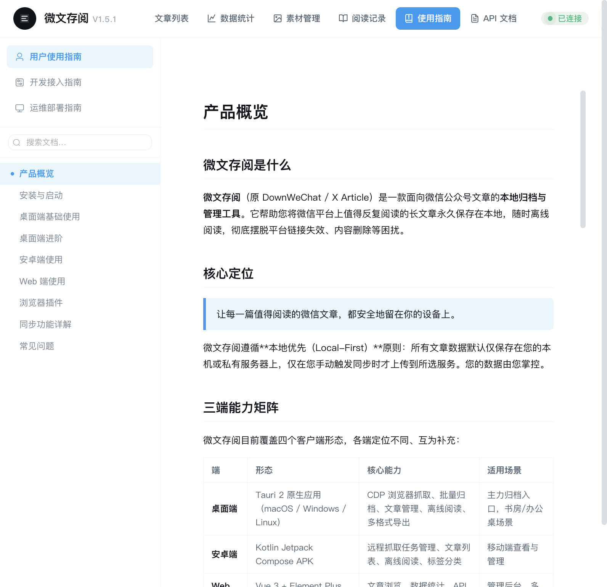

一键归档
粘贴文章链接，或从浏览器扩展点一下，桌面端自动解析正文、作者与发布时间，连同媒体资源一起保存。
核心能力
不用在浏览器、文件夹和笔记软件之间来回搬运。链接进去，文章留下。
粘贴文章链接，或从浏览器扩展点一下，桌面端自动解析正文、作者与发布时间，连同媒体资源一起保存。
正文里的图片与媒体自动下载到本地 storage/ 目录，并替换 CDN 引用，平台删稿也不影响阅读。
标题、作者、正文一起建立索引。输入一个关键词，就能在成百上千篇归档里定位到那一篇。
Markdown、Word（DOCX）、PDF 三种格式。归档不止能读，也能带走、打印或交给别的工具继续处理。
macOS、Windows、Android、Web PC、H5 与浏览器扩展。书房里归档，通勤路上接着读。
数据默认只存本机或你的私有服务器，不配置同步也完全可用；没有遥测，不上传行为数据。
数据流
同步是可选项。只用桌面端，也能拥有一个完整的本地文库。
桌面端通过 CDP 连接你已登录的 Chrome / Edge，自动抓取正文、作者与图片、视频资源。
文章写入本地 SQLite，媒体落到 storage 目录，同时建立标题、作者、正文的全文索引。
需要多设备时，把本地文章一键上传到私有 Web 服务，安卓、Web 与 H5 共用同一份文库。
多端矩阵
各端定位不同、互为补充。配置私有 Web 服务后，桌面、安卓、Web 与 H5 共享同一份文库。
Tauri 2 原生应用 · 通用二进制
Tauri 2 原生应用 · x64
Kotlin · Jetpack Compose
Vue 3 + Element Plus 管理后台
移动端文库与阅读页
Manifest V3 · Chrome / Edge
内置文档
Web 端内置使用指南、开发接入与运维部署文档；桌面端、安卓端与 Web 端共享同一套概念和术语，换端不用重新学。

下载
所有安装包与页面同源托管，不依赖 GitHub Release 或第三方网盘，国内网络可直接下载。
桌面端 · macOS
一个 DMG 同时支持 Apple Silicon 与 Intel，安装后即可开始归档、检索与导出。
wxdoc-desk-2.0.23-macos-universal.dmg
下载 DMG桌面端 · Windows
提供 MSI 与 EXE 两种安装方式，功能与 macOS 版一致，适合办公电脑长期使用。
wxdoc-desk-2.0.23-windows-x64.msi / -setup.exe
移动端
wxdoc-app-3.1.20-android.apk
下载 APKWeb
wxdoc-web-pc.zip
下载 ZIPWeb
wxdoc-web-h5.zip
下载 ZIP扩展
wxdoc-web-ext.zip
下载 ZIP安装包为当前内部分发版本，未做公网代码签名；macOS 首次启动请右键选择「打开」。
安装与启动
桌面端与安卓端都不需要注册账号。Web 端与扩展属于可选增强。
打开 DMG，把「微文存阅」拖进「应用程序」。首次启动右键点击图标选择「打开」，绕过未公证提示。
运行 MSI 或 EXE，按向导完成安装。SmartScreen 提示时选择「更多信息 → 仍要运行」，然后启动应用。
把 APK 传到手机，允许「安装未知应用」后完成安装。首次启动可选择服务地址；只用本地功能可跳过。
Web PC 与 H5 解压后用静态服务器托管；扩展解压后，在 chrome://extensions 开启开发者模式并「加载已解压的扩展程序」。
常见问题
桌面端默认保存在本机：文章元数据与正文进入本地 SQLite，图片与视频进入保存目录下的 storage/。只有你手动配置并触发同步时，数据才会上传到你自己的 Web 服务。
桌面端的自动采集依赖 CDP 连接本机已登录的 Chrome 或 Edge（88+）。没有浏览器时，仍可阅读已归档文章、搜索与导出，但无法发起新的抓取。
部署 Web 后端后，在桌面端填写服务地址，把本地文章一键上传。安卓端、Web PC 与 H5 连接同一个服务，就能看到同一份文库。同步是可选功能，不配置也不影响本地使用。
桌面端支持 Markdown、Word（DOCX）与 PDF。图片会随导出一起打包或写入文档，方便归档、打印或交给其他工具继续处理。
当前安装包使用 ad-hoc 签名，未做 Apple 公证，因此 Gatekeeper 会提示「无法验证开发者」。在「系统设置 → 隐私与安全性」中选择「仍要打开」，或右键应用图标选择「打开」即可。
不会。归档目录独立于应用安装目录，卸载客户端不会删除已保存的文章与媒体文件；重新安装后指向原目录即可继续使用。
各端独立迭代：桌面端当前为 2.0.23，安卓端 3.1.20，Web 前后端 1.7.0，浏览器扩展 2.1.0。发布页统一按「当前可用版本」提供下载，功能以各端说明为准。